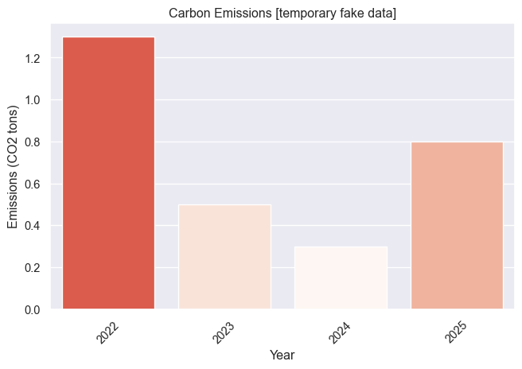

Make this Notebook Trusted to load map: File -> Trust Notebook
Carbon
Where I make my professional self carbon-transparent. Beyond transports and supercomputing, it’s difficult to count precisely but also not as important.
Travels
Flights in red, trains in blue.
Supercomputing
My work includes running simulations of the young universe or training AI models, which both require to use supercomputers and consequently a lot of electricity (for power and cooling). I do my best to keep these numbers low and get important results still! Ideally, one citizen should be aiming for ~2 tons of CO2 emissions per year for day-to-day life.
